SAE通知 · 権限管理
SCR-PRJ-011 · SCR-RBAC-001·002·003·004·006 · 通知受信者 · ロール · 権限 · 割り当て · 履歴
SAE通知
- 1.1画面構成
- 1.2受信者の追加と保存
1.1画面構成
概要
重篤な有害事象（SAE）が発生したときに、誰にメールを送るかを設定し、送信された結果を確認する画面です。メールは人が送るのではなく、有害事象の「SAE 有無」が「いいえ」から「はい」に変わった瞬間にシステムが自動で送信します。どのフィールドがその「SAE 有無」なのかはAE指定画面で決めます。この画面では受信者だけを扱います。
画面説明
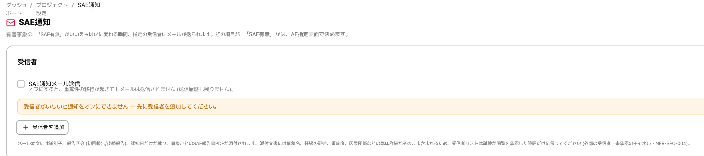
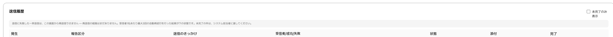
「SAE通知メール送信」 — 通知機能をオン・オフします。受信者が1人もいない場合はオンにできません (下の注意事項)。
「未完了のみ表示」 — 送信が完了していない件だけに絞り込んで表示します。
画面のサブタイトルが発火条件を示しています — 「有害事象の『SAE 有無』が いいえ → はい に変わった瞬間、指定された受信者にメールが送信されます。」
オフの状態の意味 — 「オフにすると、重篤性の移行が起きてもメールは送信されません (送信履歴も残りません)。」 履歴すら残らない点が重要です。
黄色の案内 — 現在は受信者がいないためオンにできないという案内です。受信者を入れると同じ位置の文言が変わります 1.2。
メールに何が含まれるかを説明している段落です — 本文には識別子・報告区分・認知日までしか含まれませんが、添付されるSAE報告書には臨床詳細がそのまま入ります (1.2 の注意事項を参照)。
送信履歴 — 自動送信された結果が1件ずつ蓄積されます。キャプチャはまだ送信がないため「送信された通知はありません。」と表示されています。
灰色の案内 — 「失敗した通知を画面から再送信することはできません — 再送信の経路はまだありません。受信者1人につき最大3回まで自動で再試行した結果が下の状態です。未完了の件はシステム担当者に伝えてください。」
送信履歴の列構成
| 列 | 含まれる内容 |
|---|---|
| 発生 · 報告区分 | 通知が送信された時刻 · 初回報告または後続報告 |
| 送信のきっかけ | 重篤性の移行(いいえ→はい)または内容の変更 |
| 受信/成功/失敗 | 送信先の人数と成功・失敗の件数 |
| 状態 | 全員に送信 · 一部失敗 · 全員失敗 · 受信者なし |
| 添付 · 完了 | SAE報告書ファイル · 処理が完了した時刻 |
注意事項
必須確認 データ破損 · フォーム完了不可
- • 受信者を先に入れないと通知をオンにできません。受信者が0人の状態で「SAE通知メール送信」だけにチェックを入れて保存すると拒否されます。送信先がない通知をオンにしておく意味がないためです。順番は「受信者を追加 → 保存 → チェック → 保存」ではなく、受信者を入れてチェックを入れ、まとめて一度保存すれば十分です 1.2。さらに、オフの間は履歴も残らないため、運用を始める前にオンにしておくのが安全です。
1.2受信者の追加と保存
概要
受信者を1行に1人ずつ入力します。1行はメールと表示名の2つの欄になっており、すべて入力したあと「保存」を押すと反映されます。受信者が1人でも入ると、カード見出しが「受信者 (N名)」に変わり、上の黄色の案内も別の文言に差し替えられます。
画面説明


メール — 受信するアドレスです。大文字・小文字だけが違うアドレスは同じアドレスとして扱われ、重複として検出されます。
「+ 受信者追加」 — 空の行を1つ増やします。複数人を入力するときは繰り返します。
表示名 — そのアドレスが誰のものかを分かりやすくするための名札です (キャプチャは「管理者」)。
削除(ゴミ箱) — その行を消します。最後の1人を削除しようとすると、確認がもう一度求められます。
「保存」 — 通知のオン・オフと受信者一覧をまとめて保存します。押さないと何も反映されません。
カード見出しが「受信者 (1名)」に変わりました — 何人が登録されているかをここで確認します。
黄色の案内が別の文言に差し替えられました — 「この一覧は自動では更新されません — 担当者が変わったり退職したりしても、そのまま残ります。ロールが変わったら手動で整理してください。」 (下の注意事項)
注意事項
必須確認 データ破損 · フォーム完了不可
- • この一覧はシステムが管理しません — 手動で整理する必要があります。担当者が変わったり退職したりしても、アドレスはそのまま残り、通知は送られ続けます。一方、通知に添付されるSAE報告書には、事象名・経過の記述・重症度・因果関係などの臨床詳細がそのまま含まれます — つまり、この一覧がそのまま閲覧範囲になります。画面の下の段落がその点を説明しているので、試験が閲覧を承認した範囲だけに保ち、引き継ぎのたびに一緒に点検してください。外部アドレスや共用のメールボックスには、特に注意が必要です。
ロール一覧・管理
- 2.1画面構成
- 2.2行アクションメニュー
- 2.3新規カスタムロール
- 2.4ロールセットのインポート
2.1画面構成
概要
このプロジェクトでどのロールが使われているかと各ロールが何人に割り当てられているかを、1つの画面で確認できます。ロールには2種類あります — システムがあらかじめ定めた基本5種と、プロジェクトで直接作成したカスタムロールです。基本ロールは削除したり無効化したりできず、権限だけを調整できます。
画面説明
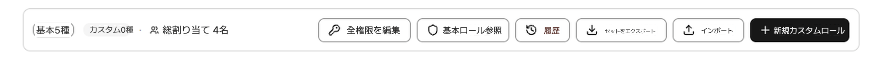

「全権限を編集」 — ロール5種 × 全権限を1つの表で確認します 4.1。編集権限がない場合は、ラベルが「全権限を表示」に変わります。
「基本ロール参照」 — 基本5種がもともとどのようなロールなのかを説明する、読み取り専用の画面です 4.2。
「履歴」 — ロールや割り当てがいつ、どのように変わったかを確認します 4.3。
「セットをエクスポート」 — 現在のロール・権限構成をファイルでダウンロードします。監査対応用のスナップショットとして使われます。
「インポート」 — エクスポートしたファイルを別のプロジェクトに適用します 2.4。
「+ 新規カスタムロール」 — このプロジェクトだけのロールを作成します 2.3。
「割り当てる」 — そのロールを人に割り当てます。押すと割り当て画面に移動し、割り当てダイアログが自動で開き、ロールがあらかじめ選択された状態になります 3.2。
⋯ — そのロールのアクションメニューを開きます 2.2。
概要 — 基本ロールの種類数 · カスタムロールの種類数 · 総割り当て人数。
表は7列です — ROLECODE · ROLENAME · 種類 · SITE制限 · 割り当て · 状態 · アクション。
種類 — 基本(システム提供)またはカスタム(直接作成したもの)。
SITE制限 — Site制限は自分の参加施設のデータだけ、全体アクセスはプロジェクト全体を見ます。
状態 — 無効化したロールは、ここの表示が変わり、新しい割り当てには使えません。
注意事項
誤解しやすい動作
- • ロールを変更できるのはワークスペース管理者だけです。研究責任者・データ管理者にもこの画面は開けますが、「インポート」と「+ 新規カスタムロール」はまったく表示されず、「全権限を編集」も「全権限を表示」に変わります — 表示されないのは故障ではなく、権限による正常な動作です。また、終了・アーカイブされたプロジェクトではボタンは表示されますが、薄く無効化されます — こちらは状態が変われば再び使えるという意味で、2つを区別して表示しています。
2.2行アクションメニュー
概要
ロールの1行に対してできることは3つあります。最初の2つは移動で、最後の1つだけが実際に変更する操作です。メニューは押したその行にだけ適用されるため、どのロールの ⋯ を押したのかを先に確認してください。
画面説明
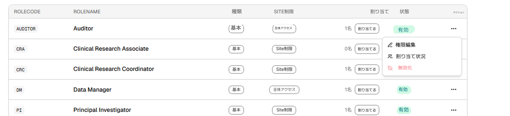
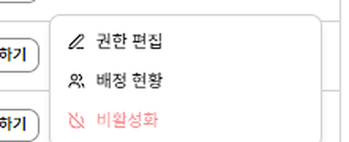
⋯ — その行のメニューを開きます。もう一度押すか、外側を押すと閉じます。
「権限編集」 — そのロール1つだけの権限を編集する画面に移動します。複数のロールをまとめて見たい場合は、上の「全権限を編集」を使ってください 4.1。
「割り当て状況」 — そのロールが誰に割り当てられているかを確認する画面に移動します 3.1。
「無効化」 — そのロールをこれ以上使えないように無効にします。キャプチャでは薄く表示されています (下の注意事項)。
メニューを開いた行がどのロールかを左側で確認します — キャプチャはAuditorの行です。
注意事項
必須確認 データ破損 · フォーム完了不可
- • 基本ロールは無効化できません。キャプチャで「無効化」が薄く表示されているのは故障ではなく、Auditorが基本5種のひとつだからです。ボタンにマウスを合わせると「基本ロールは無効化できません」と表示されます。無効化は、直接作成したカスタムロールで、かつまだ有効な場合にだけ押せます — 終了・アーカイブされたプロジェクトでは押せなくなります。基本ロールを使わないようにしたい場合は、無効化ではなく、そのロールに人を割り当てないことで対応します。
2.3新規カスタムロール
概要
基本5種では足りないときに、このプロジェクトだけで使うロールを作成します。たとえば、読み取りだけができる参観者のように、基本ロールにない組み合わせが必要なときに使います。ここではロールの枠だけを作成し、どの権限を与えるかは作成後に権限編集画面で決めます 4.1。
画面説明

roleCode — ロールを識別するコードです。英大文字・数字・アンダースコア(_)だけ使え、50文字までです (例: READONLY_CTM)。
roleName — 画面に表示される名前です (例: CTM 読み取り)。
説明 — このロールを作成した理由を書いておきます。後で見る人のための欄です。
Site範囲 — Site制限ロールは所属施設のデータだけを見て、プロジェクト全体アクセスロールはすべての施設を見ます。作成後はこの設定がロールの性質を決めるため、慎重に選んでください。
作成方式 — 空の権限セットで作成すると権限が1つもない状態で始まり、既存ロールの複製を選ぶと、選んだロールの権限をそのまま引き継いで始まります。
「作成」 — ロールを作成します。一覧に種類が「カスタム」の行として追加されます。
ダイアログの説明に制約が書かれています — 「プロジェクト単位のカスタムロールを作成します。システムのロール名は使用できません。」
入力ルールがラベルの横に書かれています — 「(英大文字・数字・_ · 50文字)」。
注意事項
必須確認 データ破損 · フォーム完了不可
- • 基本ロールと同じ名前は使えません。PI · CRC · CRA · DM · AUDITOR のようにシステムが使っている名前をroleCodeに入れると拒否されます。すでにあるコードを入れても拒否されます — どちらの場合も、roleCodeの欄に理由が表示されます。また、「空の権限セットで作成」を選ぶと、作成直後は何もできないロールになります。作成したまま権限を与えず人を割り当てると、その人はどの画面も開けなくなるため、作成 → 権限編集 → 割り当ての順番を守ってください。
2.4ロールセットのインポート
概要
他のプロジェクトで「セットをエクスポート」で保存しておいたファイルを、このプロジェクトに適用します。同じ構成を複数の試験で繰り返し使うときに使います。適用すると権限がすぐに変わるため、すぐには適用せず、プレビューの段階を一度踏みます — 何が変わるかを確認してから適用します。
画面説明
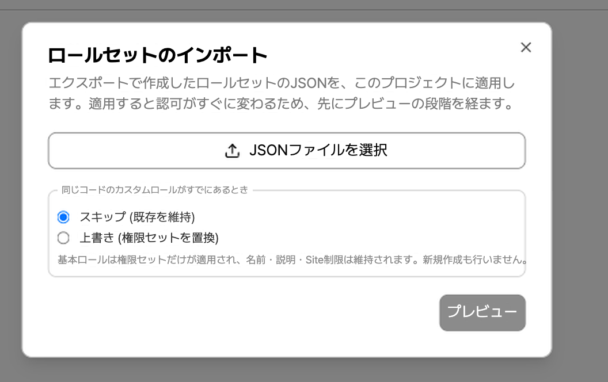
「JSONファイルを選択」 — エクスポートで作成したファイルを選びます。選ぶまでは次の段階に進めません。
同じコードのカスタムロールがすでにある場合 — スキップは既存のロールをそのまま残し、上書きは権限セットをファイルの内容に置き換えます。
「プレビュー」 — 何が変わるかを先に確認します。ファイルを選ぶ前は薄く表示され、押せません。
ダイアログの説明に手順が書かれています — 「適用すると認可がすぐに変わるため、プレビューの段階を経ます。」
基本ロールは例外という案内です — 「基本ロールは権限セットだけが適用され、名前・説明・Site制限は維持されます。新規作成も行いません。」
注意事項
必須確認 データ破損 · フォーム完了不可
- • プレビューを確認したら、すぐに適用してください。プレビューと適用のあいだに他の人がロールを変更すると、適用はすべて拒否され、「プレビュー後に対象ロールが変更されました。何も適用されていません — プレビューを再度実行してください。」と表示されます。一部だけが適用されることはないため、途中の状態を心配する必要はなく、プレビューからやり直せば十分です。また、「上書き」は元に戻しにくいため、適用前に「セットをエクスポート」で現在の構成を先に保存しておくのが安全です。
ロールの割り当て
- 3.1割り当て一覧
- 3.2新規ロール割り当て
3.1割り当て一覧
概要
誰がどのロールでこのプロジェクトに参加するかを管理する画面です。ロール一覧がロールの定義を扱うのに対し、ここでは人とロールの結びつきを扱います。1人に担当施設と有効期間をあわせて指定でき、期間が終わると自動的に効力がなくなるようにすることもできます。
画面説明

ロールフィルター — 特定のロールの割り当てだけに絞り込みます。ロール一覧の「割り当てる」から入ると、そのロールがすでに選択された状態になります。横にあるSiteフィルターと検索(氏名・メール)も一緒に使えます。
「無効を含む」 — 解除された割り当てもあわせて表示します。普段はオフにしておき、過去の割り当てを確認するときだけオンにします。
「履歴」 — 割り当てがいつ変わったかを確認します 4.3。
「+ 新規割り当て」 — 割り当てダイアログを開きます 3.2。
⋯ — その割り当てのアクションメニューです。
画面のサブタイトル — 「ユーザーごとのプロジェクトロールと担当施設を管理します。」
表示 N / 全体 N — フィルターで絞り込まれた件数と全体の件数です。
表は7列です — ユーザー · ロール · SITE · 有効期間 · 割り当て · 有効 · アクション。ユーザー欄には氏名とメールが一緒に表示されます。
有効期間 — 期間を指定していない場合は「— ~ 無期限」です。キャプチャがその状態です。
下部の案内 — 割り当てたい人が一覧にいないときの案内です。ワークスペースのメンバーでなければ割り当てそのものができず、先にワークスペースのメンバー管理で追加する必要があります (下の注意事項)。
注意事項
誤解しやすい動作
- • ワークスペースのメンバーでない人は割り当てられません。割り当てダイアログのユーザー一覧は、ワークスペースのメンバーの中からのみ選ぶようになっているため、まだメンバーでない人はまったく表示されません。画面下の案内にあるリンクから、ワークスペースのメンバー管理で先に追加してから戻って割り当ててください。「ユーザー選択」一覧に探している人がいない場合、名前を間違えて探しているのではなく、メンバーではないケースがほとんどです。
3.2新規ロール割り当て
概要
1人にロールを割り当てるダイアログです。ユーザーとロールの2つを決めれば割り当てられ、担当施設と有効期間は必要なときだけ指定します。ロール一覧の「割り当てる」から入った場合は、ロールがすでに入力されているため、人を選ぶだけで済みます — キャプチャがその状態です。
画面説明

ユーザー (ワークスペースのメンバー) — 割り当てる人を選びます。ワークスペースのメンバーだけが一覧に表示されます (3.1 の注意事項を参照)。
ロール — どのロールで参加させるかを選びます。キャプチャではAUDITORがあらかじめ選択されています。
Site — 担当施設です。選ばない場合はプロジェクト全体を見ます (下の注意事項)。
開始日 — 空欄のままにすると、すぐに適用されます。
終了日 — 空欄のままにすると無期限です。日付を入れておくと、その日以降は自動的に効力がなくなるため、1件ずつ解除する必要はありません。
理由 — 書いておくと変更履歴にあわせて記録されます 4.3。任意項目ですが、監査対応では書いておくほうが望ましいです。
「割り当て」 — 割り当てを確定します。一覧に1行が追加されます。
ダイアログの説明 — 「ワークスペースのメンバーにプロジェクトロールを割り当てます。」
Site を指定したときの結果を説明する案内です — その施設の研究者としても登録され、業務と通知の対象になります。
注意事項
必須確認 データ破損 · フォーム完了不可
- • 「Site」は単なる範囲の指定ではありません。空欄のままにすると、そのロールはプロジェクト全体の施設のデータを見ますが、施設を1つ指定すると、その施設の研究者としても登録され、業務・通知の対象になります — 画面でもその点を直接案内しています。つまり、閲覧範囲を狭めようとしてうっかり施設を選ぶと、その施設の業務まで受け取ることになります。臨床開発モニターのように複数の施設を担当する場合は空欄のままにし、施設に所属する研究看護師のように、実際にその施設の業務を担当する場合にだけ指定してください。
権限の確認と履歴
- 4.1ロール・権限マトリクス
- 4.2基本ロールテンプレート
- 4.3ロールの変更履歴
4.1ロール・権限マトリクス
概要
どのロールが何をできるかを1つの表で確認して編集します。権限が行、ロールが列で、交差する欄のチェックがそのロールの権限です。権限は数が多いため、ドメインごとに折りたためるグループにまとめられ、上の検索で絞り込んで探せます。変更内容は「保存」を押して初めて反映されます。
画面説明
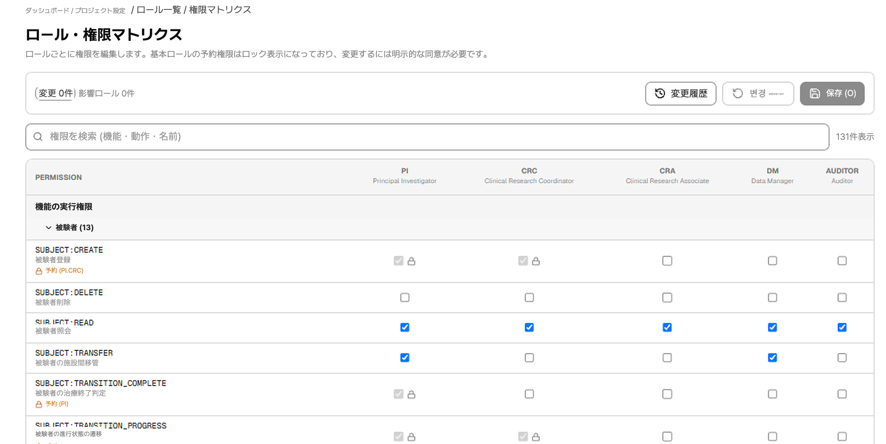
検索 — 権限の名前・機能・操作で絞り込みます。探している権限がどのグループにあるか分からないときに、いちばん早い方法です。
「変更履歴」 — 権限がいつ、どのように変わったかを確認します 4.3。
「保存 (N)」 — 変更内容を反映します。かっこ内は変更された欄の数で、0 の場合は押せません。元に戻すには、左側の「変更を取り消す」を押します。
画面のサブタイトルが、あらかじめルールを示しています — 「基本ロールの予約権限はロック表示され、変更時には明示的な同意が必要です。」
変更 N件 · 影響ロール N件 — 保存する前に、いくつのロールが影響を受けるかをここで確認します。
N件表示 — 現在表示されている権限の数です。検索をかけると、この数が減ります。
列がそのままロールです — キャプチャは基本5種(PI · CRC · CRA · DM · AUDITOR)。カスタムロールを作成すると、列が増えます。
ドメイングループ — 「被験者 (13件)」のようにまとめられ、折りたたんだり展開したりできます。
鍵マーク + 「予約」 — そのロールの中核となる権限のため、解除できない欄です (下の注意事項)。
チェック欄 — 押してオン・オフを切り替えます。変更された欄は色で区別され、上の変更件数に反映されます。
注意事項
必須確認 データ破損 · フォーム完了不可
- • ロックされた欄には、3つの異なる理由があります。① 基本ロールの中核権限 — 研究責任者から被験者撤回権限を外せないように、そのロールをそのロールたらしめる権限は解除できません (キャプチャの「予約 (PI,CRC)」)。② プラットフォーム等級の権限 — プロジェクトのロールには、どの場合も付与できません。③ システム管理者専用の権限。ただし、直接作成したカスタムロールでは①はロックされず、オンにできます。その場合、保存時に「予約権限変更の確認」ダイアログが表示され、もう一度同意を求められます — 規制上の責任が伴う権限なので、誰に、なぜ与えるのかが明確な場合にだけ使ってください。
4.2基本ロールテンプレート
概要
基本5種のロールがもともとどのようなロールかを説明する読み取り専用の画面です。各ロールの主な責任とその責任の規制上の根拠がカードにまとめられており、権限を調整する前に、そのロールがなぜその権限を持つのかを確認するために使います。プロジェクトごとのロールとは無関係の原本なので、ここでは何も変更されません。
画面説明
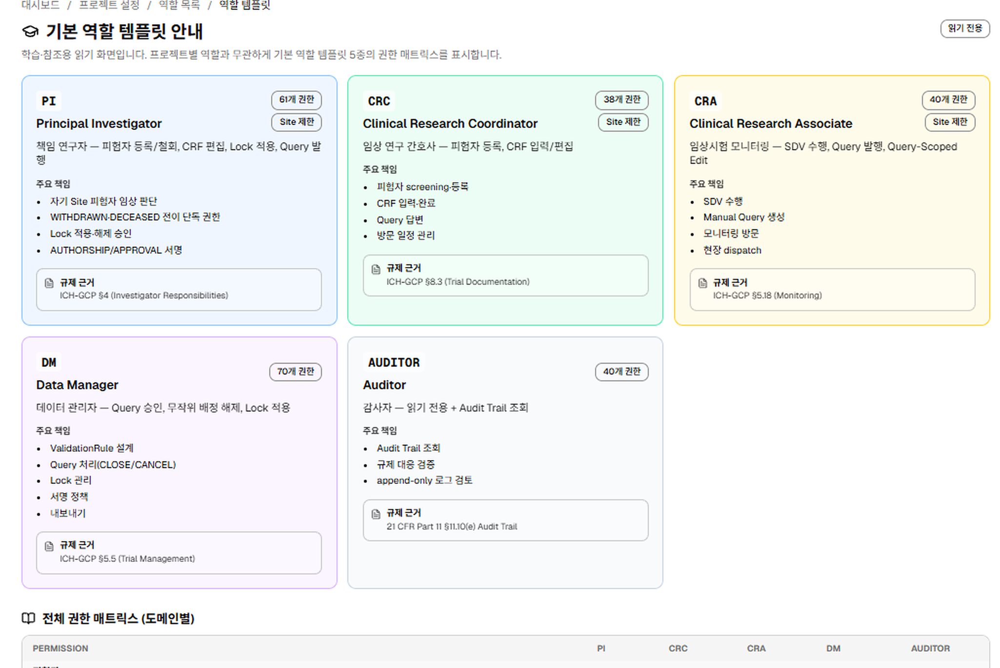
「読み取り専用」バッジ — この画面では変更できません。
画面のサブタイトル — 「学習・参照用の読み取り画面です。プロジェクトごとのロールとは関係なく、基本ロールテンプレート5種の権限マトリクスを表示します。」
カード右側のバッジ2種 — 権限の数とSite制限の有無です。ロールごとに権限の数が違うことを、ここで一目で比べられます。
主な責任 — そのロールが担う業務を要約した一覧です。
規制上の根拠 — その責任がどの規定に基づくかを示します (例: ICH-GCP §4 Investigator Responsibilities)。権限を減らしたり増やしたりするときの根拠として使う場所です。
全権限マトリクス (ドメインごと) — カードの下に、5種 × 全権限の表が続きます。
表の列も基本5種で、持っている権限には緑のチェックが表示されます。編集用のマトリクス 4.1と違い、チェックボックスではなく表示のみです。
注意事項
誤解しやすい動作
- • この画面の内容と、このプロジェクトの実際の権限は異なる場合があります。ここはシステムが定めた原本で、プロジェクトで権限を調整している場合、実際の値はロール・権限マトリクス 4.1にあります。今どう動くかを確認するときは4.1を、もともとどのようなロールかを確認するときはこの画面を見てください。権限に関する問い合わせを受けたときは、2つの画面を一緒に開いて原本と現在の違いを見れば、いつ何が変わったのかを推測でき、その変更時点は履歴 4.3で確認します。
4.3ロールの変更履歴
概要
ロールと割り当てがいつ · 誰に · 何からどう変わったかをまとめて確認する画面です。追記のみ可能なので、一度記録された行は修正も削除もできません — 誤って記録されたものがある場合は、訂正する新しい行を追加する方法で正します。画面は人の割り当て履歴が基本で、ロールそのものの変更は一番下に別にあります。
画面説明
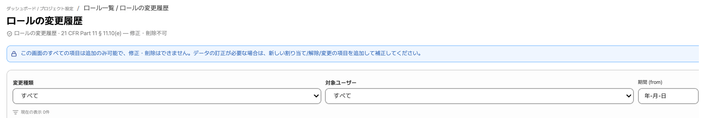
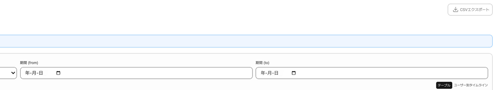
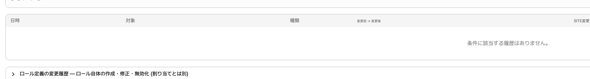
変更種類 · 対象ユーザー — どの種類の変更か、誰に対する変更かで絞り込みます。
「CSVエクスポート」 — 今画面に表示されている項目をファイルでダウンロードします。
期間 (from) — この日付から。
期間 (to) — この日付まで。
「テーブル」 / 「ユーザー別タイムライン」 — 表で見るか、人ごとにまとめて時系列で見るかを選びます。1人のロールがどのように移ってきたかを見るときは、タイムラインが便利です。
サブタイトルがこの画面の性格を示します — 21 CFR Part 11 § 11.10(e) · 修正・削除不可。
青の案内 — 「本画面のすべての項目は追加のみ可能で、修正・削除はできません。データの訂正が必要な場合は、新しい割り当て／解除／変更の項目を追加して補正してください。」
現在の表示 N 件 — フィルターに該当する件数です。
表は7列です — 日時 · 対象 · 種類 · 変更前 → 変更後 · SITE変更 · 理由 · 実行者。理由列には、割り当てるときに書いておいた理由がそのまま表示されます 3.2。
「ロール定義の変更履歴」 — 折りたたまれている領域を開くと、ロールそのものの作成・修正・無効化が表示されます。割り当て履歴とは別のものなので、権限がいつ変わったかはこちらで探してください。
注意事項
必須確認 データ破損 · フォーム完了不可
- • この画面に入れるのは監査者とワークスペース管理者だけです。ただし、ロール一覧画面の「履歴」ボタンは誰にでも表示されます — 研究責任者やデータ管理者が押すと画面は移動しますが、入ると権限に関する案内で止められます。ボタンが表示されているからといって閲覧権限があるわけではないため、履歴が必要な場合は監査者またはワークスペース管理者に依頼してください。履歴は「CSVエクスポート」で渡せますが、渡せる範囲は今画面に表示されている項目までなので、期間フィルターを先に合わせてからエクスポートしてください。